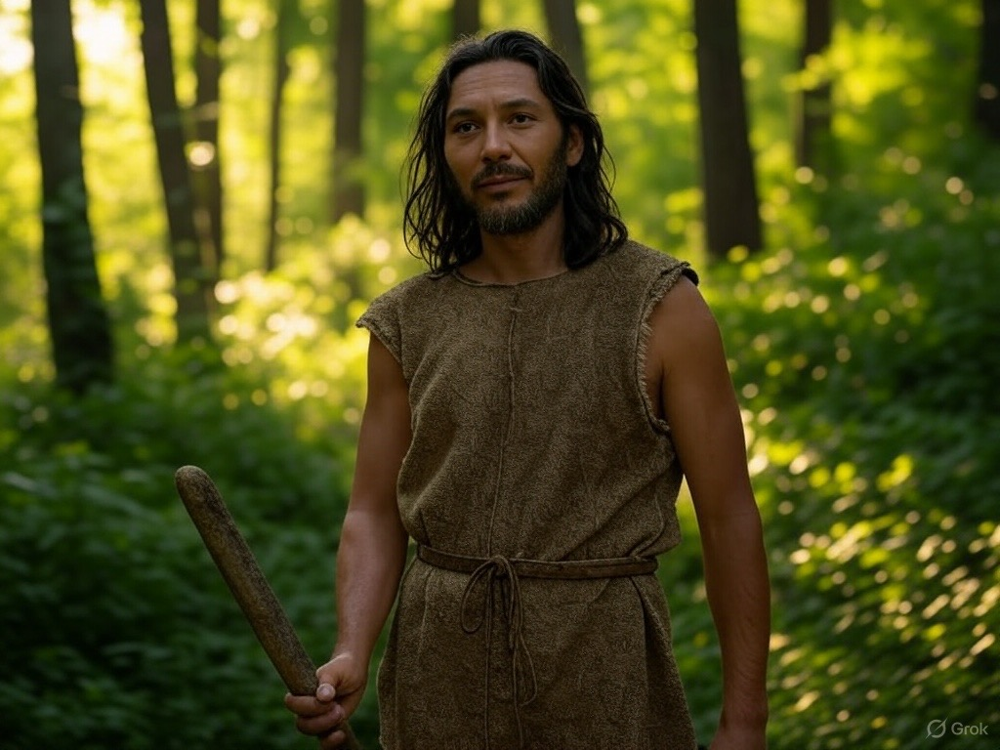

Court-métrage : Noa (ou Looping)
Idée juste reformulée par ChatGPT pour que ça soit plus lisible + Remodifiée
Des historiens, spécialisés dans l’étude des textes anciens, mettent au jour des écrits prophétiques
annonçant l’arrivée d’un être venu d’un autre temps. Selon ces textes, cet être marquera un tournant décisif
pour l’humanité, un recommencement dont la nature exacte reste mystérieuse.
En parallèle, Benjamin, un homme ordinaire, découvre un individu étrange alors qu’il se promène dans la
nature : un homme sapé à l'ancienne, à l’apparence primitive, portant une lance et vêtu de haillons rappelant l’ère
préhistorique. Intrigué et pris de compassion, Benjamin décide de lui venir en aide. Il l’héberge, le
nourrit et tente de l’intégrer à la société moderne. Mais cet être, silencieux et fasciné par tout ce qui
l’entoure, réagit mal à ce monde : il vomit en mangeant un burger, souffre en regardant la télévision et
peine à comprendre l’univers qui l’entoure. Pourtant, il suscite une forme de fascination, notamment auprès
d’une caissière sensible et délicate. Benjamin explique à sa compagne qu'il veut s'occuper de l'homme
étrange et qu'il reviendra vers elle prochainement.

Pendant ce temps, les historiens approfondissent leurs recherches et découvrent de nouveaux éléments.
L’homme mystérieux porte un nom : Noa (ou Looping), un symbole du cycle de recommencement mentionné dans les
textes. Sa présence semble liée à un changement inévitable qui approche.
 Une nuit, alors que Benjamin dort, Noa contemple la télévision et les horreurs du monde moderne : guerres,
exploitation, cruauté envers les animaux. Cette révélation déclenche en lui un instinct profond. Il se peint
le visage de bandes noires, récupère sa lance que Benjamin lui avait confisquée et quitte l’appartement en
pleine nuit. Errant dans les rues, il rencontre des sans-abris qui, subjugués par son charisme muet et sa
présence magnétique, le suivent sans poser de questions. Peu à peu, il devient un leader silencieux, un
symbole de révolte. Son groupe grossit et se radicalise, attaquant notamment des abattoirs et des élevages
industriels.
Une nuit, alors que Benjamin dort, Noa contemple la télévision et les horreurs du monde moderne : guerres,
exploitation, cruauté envers les animaux. Cette révélation déclenche en lui un instinct profond. Il se peint
le visage de bandes noires, récupère sa lance que Benjamin lui avait confisquée et quitte l’appartement en
pleine nuit. Errant dans les rues, il rencontre des sans-abris qui, subjugués par son charisme muet et sa
présence magnétique, le suivent sans poser de questions. Peu à peu, il devient un leader silencieux, un
symbole de révolte. Son groupe grossit et se radicalise, attaquant notamment des abattoirs et des élevages
industriels.
Benjamin, découvrant son départ, tente de le retrouver. Lorsqu’il y parvient, Noa est déjà à la tête d’une
foule en furie. Dans l’excitation et le chaos, un des sans-abris poignarde la compagne de Benjamin. Ce
dernier, effondré, se retrouve impuissant face au déchaînement des événements. Noa, bien que touché par
cette tragédie, poursuit néanmoins sa mission.
À l’aube, il quitte la ville, suivi par ses partisans et par des animaux qu’il semble avoir libérés. Il
s’enfonce dans la forêt, donnant l’impression d’un retour aux origines. Alors qu’il disparaît à l’horizon,
des vaisseaux spatiaux s’élèvent dans le ciel, comme un signal énigmatique du changement annoncé.
Les historiens, arrivant au cœur de cette scène finale, observent l’instant avec émerveillement. Ils
comprennent enfin la signification de leurs découvertes et réalisent qu’ils sont témoins d’un événement qui
bouleversera l’histoire de l’humanité.
FIN
Idée de base formulée par moi
C'est l'histoire d'historiens qui prévoient et élucident des textes anciens et qui trouvent que un être venu d'ailleurs (du passé) va instaurer un recommencement qui aura sûrement bientot lieu. En parralèle, un homme Benjamin, se balade et trouve cet homme nue à l'aspect homo sapiens avec une lance et de vieux vetements qui dattent de l'air avant les civilisations. Benjamin va a la rencontre de cet homme étrange et décide de le nourrir et de l'héberger, l'homme étrange ne prononce pas un seul mot mais est très stupéfait par sa voiture et la technologie et ce qu'est le monde. Benjamin lui donne des habits du monde moderne, il mange des burgeurs (vomit), regarde la télé (mal au crane), rencontre une femme (histoire d'amour pour la femme sensible et délicate qui est caissière). (Parralèle avec les historiens du début qui découvrent encore plus de truc sur l'homme étrange, et découvrent qu'il s'appèle Noa, ou Looping, pour le recommencement)). Mais un jour, pendant la nuit, pendant que Benjamin dors dans la chambre, Benjamin voit à la télé les horreurs de ce monde et décide de se maquiller de bandes noires, reprendre sa lance qui lui avait été confisquée et il part dans la rue pour rencontrer des clochards qui vont venir manifester avec lui tel un leader (qui n'a même pas besoin de parler, mais qui a un charisme incroyable) et tout casser (les abatoires et les elevages en batterie). Pendant le temps de recrutement avec les clochards, en parralèle Benjamin se rend compte qu'il a quité l'appartement, il décide de partir à la rencontre de l'homme étrange. Il le rencontre enfin, mais lors de l'attroupement et l'effet de folie, un clochard a poignardé la copine de Benjamin, il est en larmes et l'homme étrange est triste pour Benjamin et sa copine mais il a une mission. L'homme étrange part de la ville, il fait jour c'est le matin, pour aller dans la foret avec les hommes clochards et d'autres personnes convaincues par son charisme. Il rentre avec des animaux et les gens en direction de la foret, et des vaisseaux spaciaux sont entrain de décoller. Et c'est la fin.